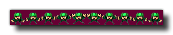

sprite_replace
Replace a sprite resource with an external one.
Syntax :
sprite_replace(ind, fname, imgnumb, removeback, smooth, xorig, yorig);
| Argument | Description |
|---|---|
| ind | The index of the sprite to permanently replace. |
| fname | The filename of the image to make the new sprite. |
| imgnumb | The number of frames the sprite will be cut up into horizontally. 1=one single image. |
| removeback | Indicates whether to make all pixels with the background color (left-bottom pixel) transparent. |
| smooth | Indicates whether to smooth the edges. |
| xorig | The x coordinate of the origin, relative to the sprite's top left corner. |
| yorig | The y coordinate of the origin, relative to the sprite's top left corner. |
Returns : N/A
Description
This function works in almost the exact same manner as sprite_add, only instead of returning the index of the sprite you are importing, it overwrites a previously
created sprite index. You can specify the sprite to overwrite as one of the pre-made sprite assets that you have for your game (those that you create in the resource tree) or you can use a sprite index that
has been created and stored in a variable using other functions like sprite_add or sprite_create_from_surface.
it should be noted that once you replace an included asset, there is no way to recover this asset and it will remain changed until the end of the game.
NOTE : This functionality is limited to the Standard Version of GameMaker:Studio and above.
The image file to be loaded should always be in *.png format and all images that are to be turned into animated sprites should have a "strip" format (see the image below). They will be split into
the number of sub-images specified following the rule sprite width = strip width / sub images.

As you can see in the above image, the sprite has been placed on a dark purple background, and this can be removed by setting the "removeback" argument to true. This works by checking the
bottom left pixel of the sprite for the color there and then uses that as the color to be removed. For example, in the above image, if we had the bottom left pixel color as green, all the green parts
of the sprite would have been removed and the rest of the purple background ignored.
If you choose the "removeback" option, you may also want GameMaker:Studio to smooth the edges of the sprite by setting the "smooth" argument to true. All this does is create a semi-transparent
border around the edges of the sprite after it has had it's background removed.
Finally you can also specify the x and y origin for the sprite. This is the point where the sprite is "fixed" onto the instance that uses it, and is always calculated as relative to the 0,0 top left corner of
one sprite sub-image. So, for example, a sprite that is 32 x 32 pixels with these values set to (16,16) will have it's origin in the center.
By default all new sprites have their bounding boxes calculated automatically (the exact bbox will depend on the size and transparency of the sprite), however you may wish to customise this, in which case
you should also use the function sprite_collision_mask.
NOTE : Depending on the target platform that is chosen you are limited as to where you can save and load files from. See Reference - Files for more information.
NOTE : You should be aware that if you are using this function in your HTML5 target game to load resources from an external server, then, due to XSS protection in browsers, attempts to load resources
from across domains can be blocked and may appear to return blank results.
Example :
sprite_replace(spr_banner, "gravemaker.png", 1, false, false, 0, 0);
The above code will replace the image asset indexed in "spr_banner" with another one loaded from an external source.